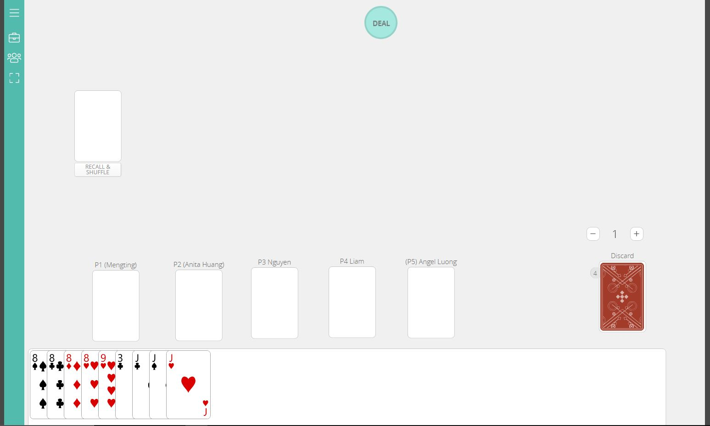

--------------------------------------------------------------------------------------
Blog Post 2: Game Lab I
2/4/2026
This is the session report for the game 'I Doubt' which we played 1/30/2026. We tried playing the game '31'
after we had finishing, but was only able to play around ~5 minutes.
PLAYERS
Mengting Chang (P1)
Anita Huang (P2)
Nguyen Nguyen (P3)
Liam Esler (P4)
Angel Luong (P5)
note: It took us a while to figure out how to set up the game on the site, and edit the player names.
-- Round one
-P1 plays 1 Ace (truth)
-P4 calls cheat, but did not understand that only the next player over (P2 in this case) is allowed to call cheat. P4 reveals the card impulsively proving that P1did in fact play an Ace.
-P2 plays 1 Two (truth)
-P3 calls cheat but was wrong, his turn was also skipped this first round by mistake, as we did not clearly understand the rules for this yet. I believe the rules of Uno are what influenced this decision.
-P4 plays 2 Threes (?)
-P5 plays 1 Four (?)
-- Round two
P1 plays 2 Fives (?)
P2 plays 1 Six (?)
P3 plays 1 Seven (truth)
P4 calls cheat but was wrong
P4 plays 3 Eights (?)
P5 plays 1 Nine (truth)
-- Round three
P1 calls cheat but was wrong (P5 was offended)
P1 plays 1 Ten (?)
P2 plays 2 Jacks (truth) (P4 is saying they have 3 jacks so P3 should call cheat)
P3 calls cheat but was wrong, providing context that P4 was lying about having 3 Jacks.
P3 plays 2 Queens (lie)
P4 calls cheat and was right
P4 plays 1 King (?)
P5 plays 1 Ace (?)
-- Round four
P1 plays 1 Two (lie)
P2 calls cheat and was right
P2 plays 1 Three (truth)
P3 calls cheat and was wrong
P3 plays 1 Four (?)
P4 calls cheat and was right
P4 plays 2 Fives (?)
P5 plays 1 Six (?)
-- Round five
P1 plays 2 Sevens (?)
P2 plays 1 Eight (truth)
P3 calls cheat and was wrong
P3 plays 1 Nine (?)
P4 plays 2 Tens (?)
P5 plays 1 Jack (?)
-- Round six
P1 plays 2 Queens (?)
P2 plays 1 King (?)
P3 plays 3 Ace (?)
P4 plays 2 Twos (?)
P5 plays 1 Three (lie)
-- Round seven
P1 calls cheat and was right
P1 plays 1 Four (?)
P2 plays 1 Five (?)
P3 plays 3 Sixs (?)
P4 plays 1 Seven (?)
P5 plays 1 Eight (?)
-- Round eight
P1 plays 1 Nine (?)
P2 plays 1 Ten (lie)
P3 calls cheat and was right
P3 plays 3 Jacks (?)
P4 plays 1 Queen (lie)
P5 calls cheat and was right
P5 plays 1 King (?)
-- Round nine
P1 plays 2 Aces (lie)
P2 calls cheat and was right
P2 plays 2 Twos (?)
P3 plays 1 Three (?)
P4 plays 3 Fours (?)
P5 plays 1 Five (?)
-- Round ten
P1 plays 1 Six (lie)
P2 calls cheat and was right
P2 plays 2 Sevens (?)
P3 plays 3 Eight (?)
P4 plays 4 Nines (lie)
This was a fatal mistake by P4, as he had only four cards in his hand, which was winning. Claiming that he played 4 nines was obviously a lie, the other players demanded P5 call his cheat.
P5 calls cheat and was right
P5 plays 4 Tens (?)
Session ended early due to class time
P1 ends with 15 cards
P2 ends with 7 cards
P3 ends with 7 cards
P4 ends with 9 cards
P5 ends with 10 cards
Tie between P2 and P3
Session Report Reflection
I found this experience of playing ‘I Doubt’ to be really fun. I thought that playing cards through the internet and over a call would make it far less enjoyable, however this was not true.
I love the socialness that games create, although I had just met the people I was playing with, we warmed up to one another quickly. I think that when humans collectively participate and focus on a common goal, bonding becomes an inherent quality of the process.
The awkwardness when starting the game was charming, the accusations we made against one another was amusing, and our subtle jokes made me laugh. Within half an hour I had already felt like I could play with this group for the rest of the day.
I truly believe that games are the best way to create these experiences. Everyone is present, attentive and prepared for an adventure, which is hard to find in other aspects of life.

--------------------------------------------------------------------------------------